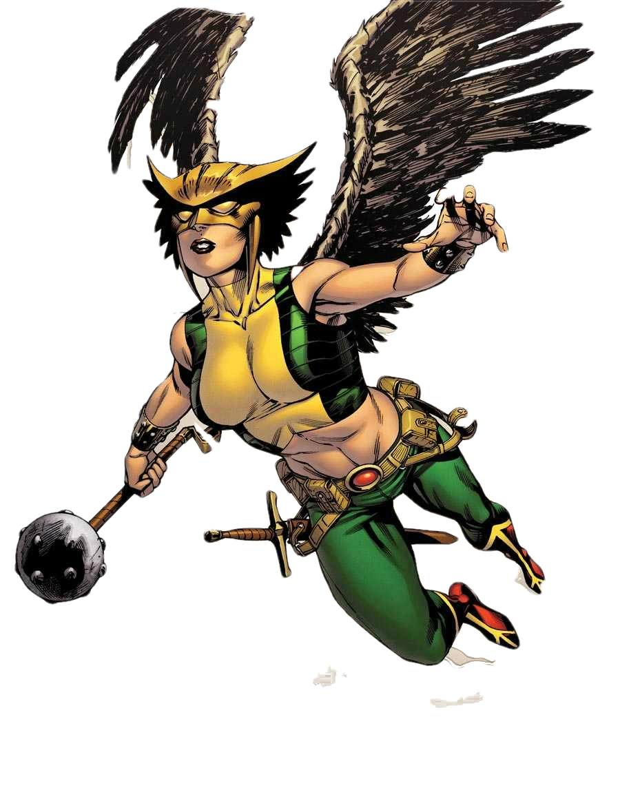

Informações do Gavião Negro
Voltar
Equipes DC

Criação da Mulher-Gavião
A Mulher-Gavião (Hawkgirl, em inglês) é um personagem dos quadrinhos da DC Comics.
Ela foi criada por Gardner Fox e Dennis Neville, fazendo sua primeira aparição em
Flash Comics #1, lançado em 1940.
A Personagem Mulher-Gavião
A Mulher-Gavião é um título compartilhado por várias personagens ao longo da história.
A mais conhecida é Shiera Sanders Hall, uma arqueóloga que descobre ser a reencarnação
de uma princesa egípcia chamada Chay-Ara. Com a ajuda de seu marido reencarnado,
Carter Hall, o Gavião Negro, Shiera assume o papel da Mulher-Gavião.
Como a Mulher-Gavião, Shiera Sanders Hall possui asas artificiais feitas de Nth Metal, assim como o Gavião Negro, que lhe concedem a capacidade de voar. Ela também possui força sobre-humana, longevidade e habilidades de combate aprimoradas. Além disso, a conexão com o Nth Metal a torna imune a envelhecimento e doenças.
Quadrinhos Importantes da Mulher-Gavião
A Mulher-Gavião teve várias histórias importantes nos quadrinhos, explorando sua história pessoal, seus relacionamentos e suas batalhas contra ameaças místicas. Aqui estão alguns dos quadrinhos mais relevantes da personagem:
"Hawkworld" (1989-1990):
Escrito por Timothy Truman e ilustrado por Enrico Marini, esta minissérie explora a origem da Mulher-Gavião em uma sociedade alienígena avançada e sua jornada até a Terra.
"JSA" (1999-2006):
Escrito por Geoff Johns e David S. Goyer, esta série segue as aventuras da Sociedade da Justiça da América, onde a Mulher-Gavião desempenha um papel importante como membro do grupo.
"Dark Nights: Metal" (2017-2018):
Escrito por Scott Snyder e ilustrado por Greg Capullo, este evento crossover apresenta uma versão alternativa da Mulher-Gavião como uma das Cavaleiras das Trevas, mostrando seu lado sombrio e perigoso.
Adaptações em Outras Mídias
A Mulher-Gavião apareceu em várias adaptações animadas e live-action, trazendo sua presença heroica para além dos quadrinhos. Aqui estão algumas das mais notáveis:
Série animada "Liga da Justiça Sem Limites" (2004-2006):
A Mulher-Gavião é uma das principais membros da Liga da Justiça, lutando ao lado de outros heróis para proteger o mundo de ameaças cósmicas.
Série de TV "Legends of Tomorrow" (2016-presente):
A Mulher-Gavião e o Gavião Negro são personagens principais nesta série, viajando no tempo e enfrentando ameaças históricas enquanto exploram sua conexão cósmica.
Habilidades da Mulher-Gavião
A Mulher-Gavião possui uma série de habilidades únicas graças às suas asas de Nth Metal e à sua conexão cósmica. Aqui estão algumas de suas principais habilidades:
Voo:
Suas asas de Nth Metal permitem que a Mulher-Gavião voe em altas velocidades e realize manobras acrobáticas.
Força sobre-humana:
Ela possui força física excepcional, permitindo que ela enfrente adversários poderosos e execute feitos impressionantes.
Longevidade:
A conexão com o Nth Metal concede à Mulher-Gavião uma vida extremamente longa e a capacidade de se regenerar rapidamente de ferimentos.
Habilidades de combate:
Ela é uma habilidosa combatente corpo a corpo, combinando seu conhecimento em artes marciais com a vantagem de suas asas e o poder do Nth Metal.
Conclusão
A Mulher-Gavião é uma heroína icônica da DC Comics, com uma história fascinante e poderes místicos. Shiera Sanders Hall assume o manto da Mulher-Gavião como a reencarnação de uma princesa egípcia, lutando ao lado do Gavião Negro para proteger o mundo de ameaças cósmicas e místicas. Suas asas de Nth Metal e suas habilidades aprimoradas a tornam uma combatente formidável, capaz de voar e enfrentar adversários poderosos. Ao longo dos anos, suas histórias nos quadrinhos exploraram sua origem, suas interações com outros heróis e seu papel na defesa da justiça. Com aparições em diversas adaptações, a Mulher-Gavião ganhou popularidade entre os fãs de quadrinhos e continua a ser uma personagem amada e inspiradora no universo da DC.